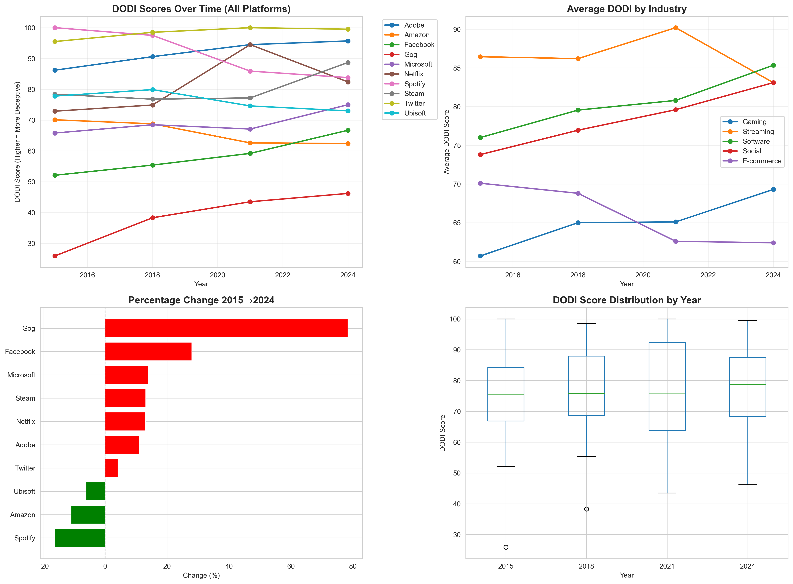

Buying nothing: scoring a decade of ownership deception in Terms of Service
Quick question: what was the last movie you bought online?
Trick question. You didn't buy it. You clicked a button that said "Buy now" and what you got was a revocable licence the platform can pull whenever it feels like it.
And you're not careless for missing that. A 2017 study by Perzanowski and Hoofnagle found that 83% of people read "Buy now" as actual ownership. The button is doing exactly what it was designed to do.
That gap bugged me enough to measure it. For the Data and Society seminar at Saarland University I built DODI — the Digital Ownership Deception Index: a 0–100 score of how hard a platform's Terms of Service works to keep you from noticing what you didn't buy. Higher means more deceptive. Everything is public: scorer, corpus, figures.
No LLM. On purpose.
Here's the design choice I'll defend the hardest: DODI contains no model. No API calls. Nothing random. It's a plain function of the document text:
DODI = 0.25 × readability penalty + 0.50 × licence ratio + 0.25 × red-flag scoreThree ingredients:
- Licence ratio (half the score). Count licence words ("license", "subscription", "access", "grant"…) against ownership words ("buy", "own", "purchase"…). This is the core trick — storefront says buy, contract says licence — so it gets the dominant weight.
- Readability (a quarter). Flesch–Kincaid grade level via
textstat. Grade 8 or below scores 0, grade 16+ scores 100. Complexity enables deception but isn't deception itself. - Red flags (a quarter). Counts of aggressive clauses: unilateral termination ("sole discretion", "without notice"), rights waivers ("class action", "arbitration", "indemnify") and data exploitation ("third parties", "sell your", "track").
Why does the no-LLM part matter so much? Because the whole study compares 2015 documents against 2024 documents. If your measuring stick drifts, you can't tell instrument drift from document drift.
Same text in, same score out, forever. No LLM will promise you that.
Ten years of fine print, measured
The corpus: 40 documents. Ten major platforms, four ToS snapshots each — 2015, 2018, 2021, 2024 — pulled from the Wayback Machine.

The language got worse. This is the decade regulators started taking dark patterns seriously. The mean DODI score still rose from 72.5 to 77.3 and seven of ten platforms drifted toward more licence-heavy, less readable, more aggressive terms.
The score lands where it should. GOG — the DRM-free store whose entire brand is "you actually own your games" — scores lowest of all ten platforms in every single year. 25.9 in 2015. Adobe and Twitter sit at the top in the 86–100 range. I didn't tune anything to make that happen; it's the sanity check the 25/50/25 weighting had to pass before I trusted it.
Netflix 2024 is my favourite data point. Ownership words in its ToS: 2. Licence words: 99. That's a ratio of 49.5, the highest in the corpus. Read that again the next time you "buy" something to watch.
Does it agree with actual humans?
Sort of. And I'd rather tell you "sort of" than dress it up.
I validated DODI against ToS;DR, the project where humans grade Terms of Service. On twelve current documents matched to ToS;DR grades, DODI correlates at Spearman ρ = 0.54 (p = 0.07). Pearson r = 0.39. Encouraging. Not proof.
To be fair, part of the gap isn't error at all. ToS;DR grades general fairness. DODI grades ownership transparency. Those are different things.
WhatsApp is the clean example: it gets a good ToS;DR grade (B) but a mediocre DODI score. A contract can be fair overall while staying vague about what you own. Both instruments are measuring what they claim to measure — they just claim different things.
Where DODI is weak (I'll say it before you do)
- Keyword counting can't read negation. "You do not own this content" counts as an ownership word. Spot checks suggest deceptive ToS rarely negate like this — they avoid ownership words entirely, which the ratio catches — but it's a real blind spot.
- n = 12 is small. ρ = 0.54 at p = 0.07 is a promising direction, not a result you should bet on.
- Wayback timing is coarse. A "2015" document is the nearest capture to that year, not January 1st.
- The score is gameable. A platform could stuff its ToS with ownership words without changing a single legal term. DODI measures language, not legal substance. Don't pretend otherwise if you use it.
What I'd build next
Negation-aware clause parsing with spaCy dependency trees would close the biggest blind spot. An LLM-as-judge validation layer on a bigger sample would complement ToS;DR. Clause-level embeddings could trace how licence clauses copy themselves between platforms over time.
But the metric I actually want? The marketing-vs-ToS gap. The deception is largest exactly where the storefront screams "buy" and the contract whispers "licence". That gap is measurable. Someone should measure it at scale.
Everything here reproduces from the repo with three scripts and no GPU. Go score your favourite platform. You won't like the number.